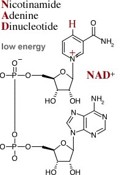
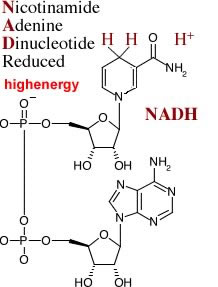

There are a number of ways that cells store energy. The synthesis of ATP from adenosine diphosphate ADP and inorganic phosphate (Pi) is the most familiar.
As you (hopefully) appreciate, whenever a bond is formed, energy is released - it always takes energy to break a bond
Generally, the energy required to break bonds comes from the kinetic energy of surrounding molecules (similarly the energy released upon bond formation is often transformed into kinetic energy).
When we think about a molecule like ATP and energy, we have to consider all of the bonds that are broken and formed in the process.
ATP is typically formed from ADP and Pi. We have to break a number of rather stable bonds in both ADP and Pi to form the new and rather unstable ADP- Pi bond in ATP. [what makes ATP unstable?]
Another class of “high energy/low stability” molecules involves the reduction of certain compounds. For example, the addition of two electrons and a proton to nicotinamide adenine dinucleotide (NAD+) leads to the formation of the high energy/unstable molecule NADH.
] ]
Similarly, the addition of two electrons and two protons to flavin adenine dinucleotide (FAD) leads to the formation of FADH2
Both NADH and FADH2 are high energy/unstable compounds, like ATP. When electrons are removed from NAPH or FADH2, that is when these molecules are oxidized, this energy is released, and NAD+ and FAD are regenerated.
The energy carried by NADH and FADH2 is used to drive a number of cellular reactions, it can also be used to generate ATP.
How does the cell use the energy stored in NADH and FADH2 to make ATP? The answer came from the work of an eccentric British scientist, Peter Mitchell It is known as the chemiosmotic hypothesis.
Figure: Peter Mitchell, click the image to learn more
Mitchell proposed that the energy held in NADH and FADH2 was used to generate a concentration gradient of H+ across the plasma membrane in bacterial cells.
Electrons, removed from NADH or FADH2, pass through an electron transport chain.
The electron transport chain is a set of membrane proteins that interact with one another in pairs of redox reactions.
As high energy electrons move from one component of the electron transport chain to the next, the first is oxidized, the second is reduced, some energy is "bled-off’ and used to pump H+s out of the cell, forming an H+ concentration gradient across the membrane.
Tutorial: Watch the tutorial: Electron transport in bacteria & archaea.
ATP synthases consist of two parts, the Fo membrane channel and the F1 ATP synthase. The ATP synthase mediates a series of coupled reactions. The first is the movement of H+s down their concentration gradient (through the ATP synthase).
The ATP synthase couples this thermodynamically favorable reaction with a second reaction, the ADP + Pi ↔ ATP + H2O reaction, which is thermodynamically unfavorable.
It is worth noting that there is nothing about this reaction that stops it (under the right conditions) from running backward. When this occurs, the ATP synthase acts as an ATPase and a pump that can move H+s against its concentration gradient.
Movie: Watch synthase in action!
As H+s move through the ATP synthase, the molecule rotates, this rotation “forces” ADP + Pi together to form ATP.
This (above) is a higher magnification view of the process, where you can see ADP and Pi binding, ATP formation, and then release.
Back to electrons: So where do the electrons end up? They have to go somewhere!
O2 is a very efficient oxidizer, that is, an acceptor of electrons from other molecules. In the presence of O2 and an electron transport chain, NADH and FADH2 are oxidized to form NAD+ and FADH (they are recycled).
The electrons pass through the electron transport chain, as they move H+s are moved across the membrane to form a H+ gradient.
Eventually four of these electrons (and four H+s) are added to two O2s, creating two water molecules. Again this is a thermodynamically favorable reaction.
Under aerobic conditions (that is in the presence of O2), glucose can be broken down completely to CO2 and H2O; much (~60%) of the energy originally present in the glucose molecule is captured as ATP (what happens to the rest?)
In the absence of O2, that is under anaerobic conditions, the breakdown of pyruvate to CO2 and H2O cannot occur - the energy in pyruvate is unavailable to the cell.
The cell contains limited amounts of NAD+ and NADH (can you imagine why?)
In order for a cell to continue to metabolize glucose, it must regenerate its NAD+. In the absence of O2, the regeneration of NAD+ involves the oxidation of NADH by pyruvate.
Most of the energy present in the glucose molecule is still present in products of this reaction; only about 6% of the energy present in glucose is captured in the absence of molecular oxygen.
Questions to answer
Questions to ponder